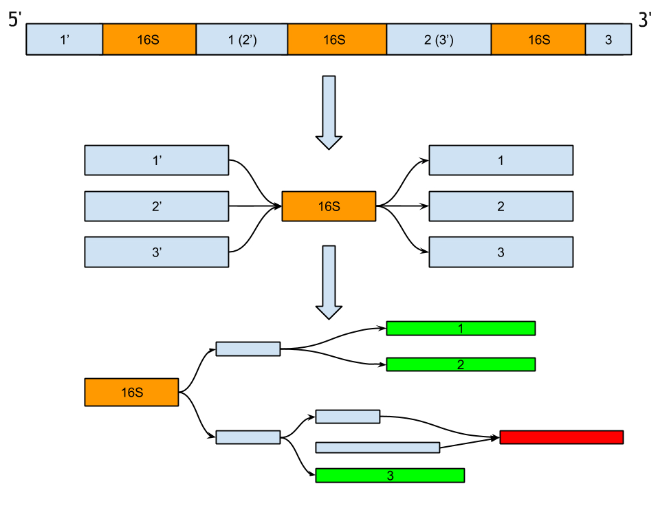

Metagenomic assembly and annotation of 16S ribosomal RNA genes by SPAdes
Scientific advisor:
Sergey Nurk, Center For Algorithmic Biotechnology SPbSU
Why?
16S rRNA genes are very important in molecular phylogeny due to slow evolution rates of their regions
One great example [deprecated]

Woese et al. (1990)
Contemporary view

Christopher et al. (2015)
Analysis of 16S rRNA genes
- Target sequencing;
- Whole metagenomic sequencing.
The problem
- We want to detect an unusual biology across Bacterial groups;
- We cannot use target assembly but we still need full length 16S rRNA genes;
- We also extremely need a genome information about an unusual group. What are we supposed to do?
Source: Joint Genomic Institute, Natalia Ivanova group
The plan
- Contigs binning according to 16S rRNA via SPAdes assembly graph;
- Comparison of MetaSPAdes de novo and custom JGI pipeline assemblies.
Correspondence between 16S rRNA in the genome and in the assembly graph
Bioinformatics reality
 https://github.com/rrwick/Bandage
https://github.com/rrwick/Bandage
SPAdes 16S rRNA on isolates
| Organism | 16S rRNA copies in genome | Assembled | Long contigs found/expected |
|---|---|---|---|
| Some bacteria | 2-15 | 1+* | ~80% |
*This number depends on available sequencing information (mate-pair, PacBio reads, etc.)
Comparison of 16S rRNA from JGI pipeline and from MetaSPAdes
| JGI | SPAdes |
|---|---|
| 1679 | 1368 |
*~1/5 missed 16S rRNA may be due to complex graph structures or simply misassemblies.
Future work
General 16S rRNA problem
 The same: 1-3 - order, 4-11 - class, 12 - phylum
The same: 1-3 - order, 4-11 - class, 12 - phylum
16S rRNA diversity
Sequence diversity among the 16S rRNA genes in a genome was found in 235 species (from 0.06% to 20.38%; 0.55% ± 1.46%)How to improve de novo assembly?
- Use information about 16S rRNA both primary and secondary structures (Reago);
- Use existing DBs of RNA families (Rfam, Greengenes).